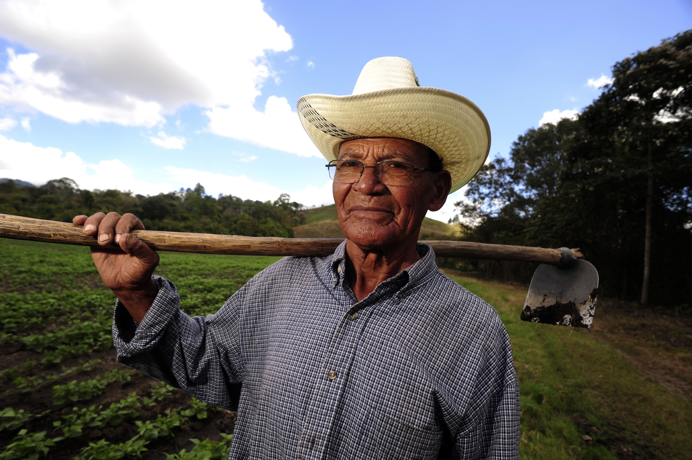

Tahan e-valida
Logi sisse
Pealeht
Kandidaadid
Tulemused
Statistika
Filtreeri
Nimi
Erakond
Piirkond
Otsi
 Nimi: Küla Ants
Erakond: Eesti Keskerakond
Piirkond: Kolkaküla
Hääli: 3
Nimi: Vurle Linna
Erakond: Erakond Isamaa ja Res Publica Liit
Piirkond: Mustamäe ja Nõmme, Tallinn, Harumaa
Hääli: 1
Nimi: Sven Mikser
Erakond: Sotsiaaldemokraatlik Erakond
Piirkond: Nõmme, Tallinn
Hääli: 4